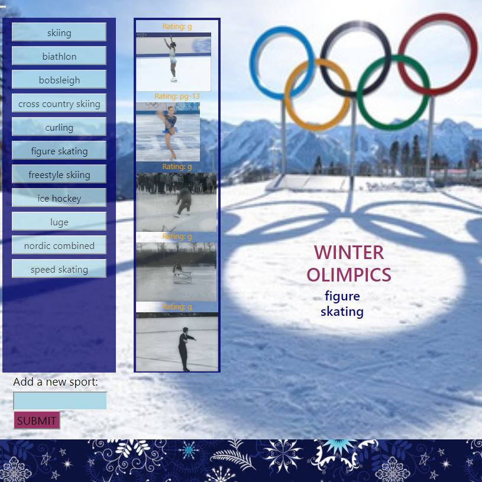
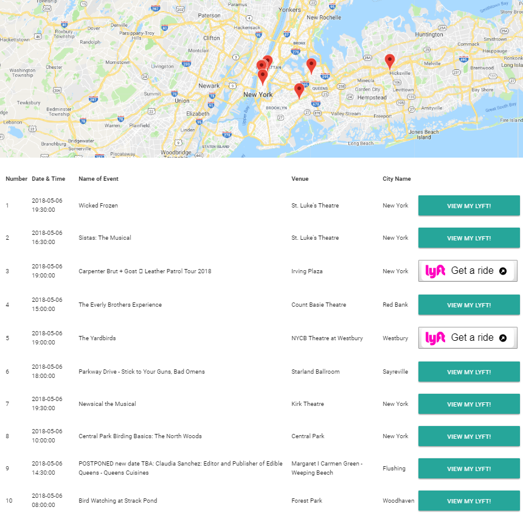
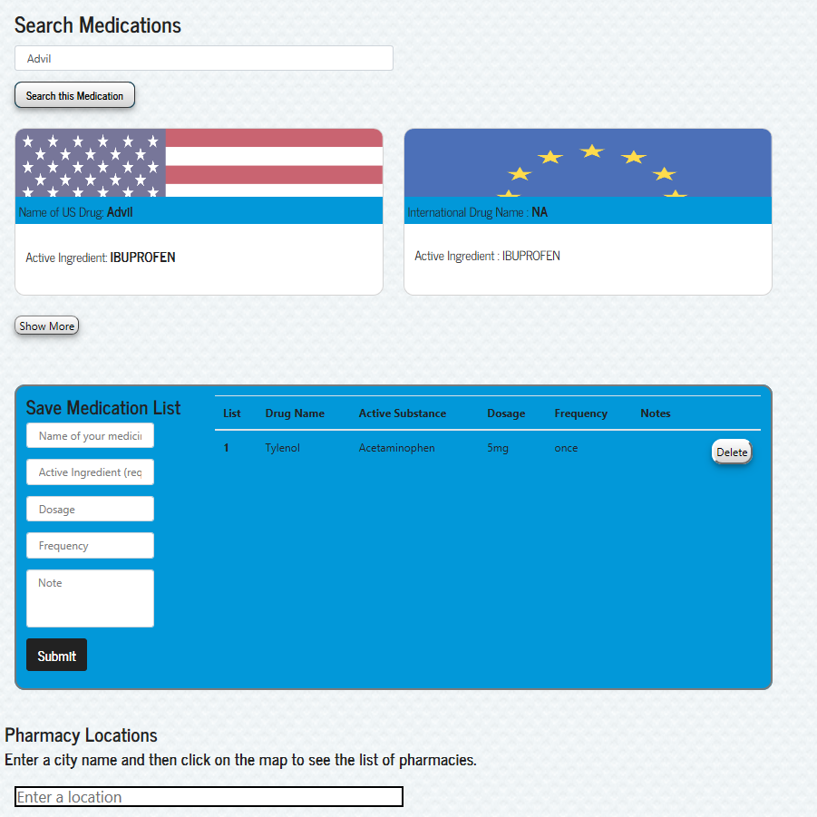
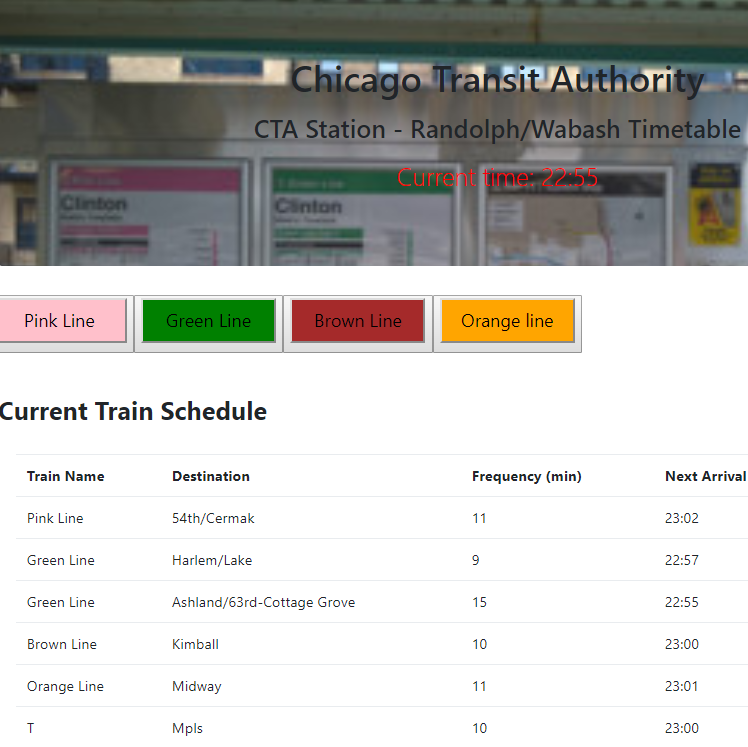
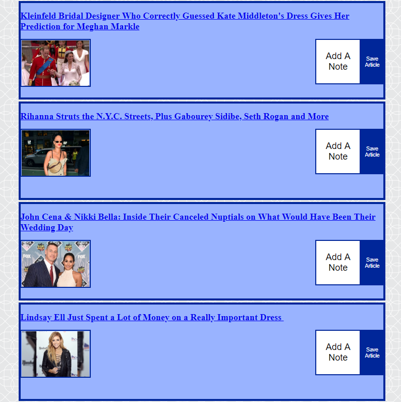
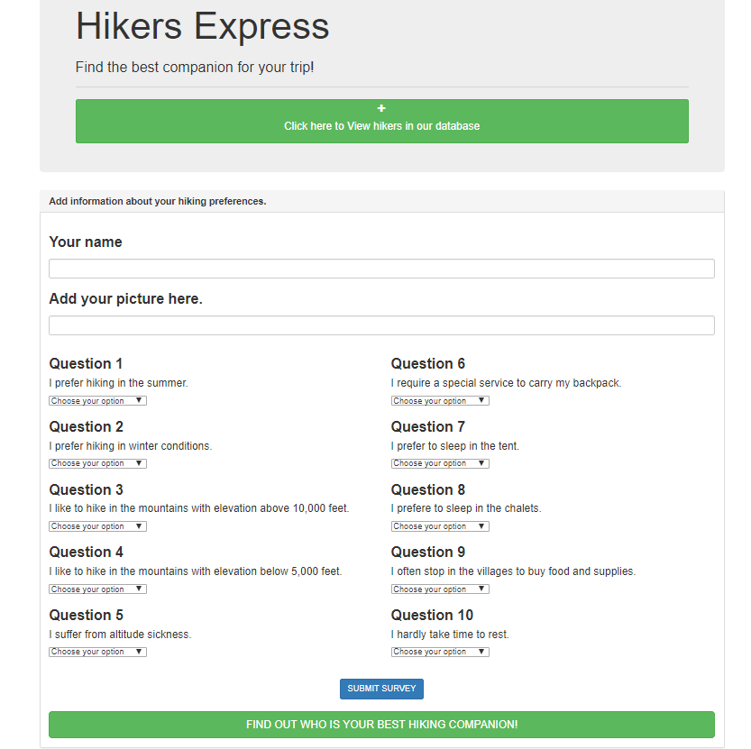
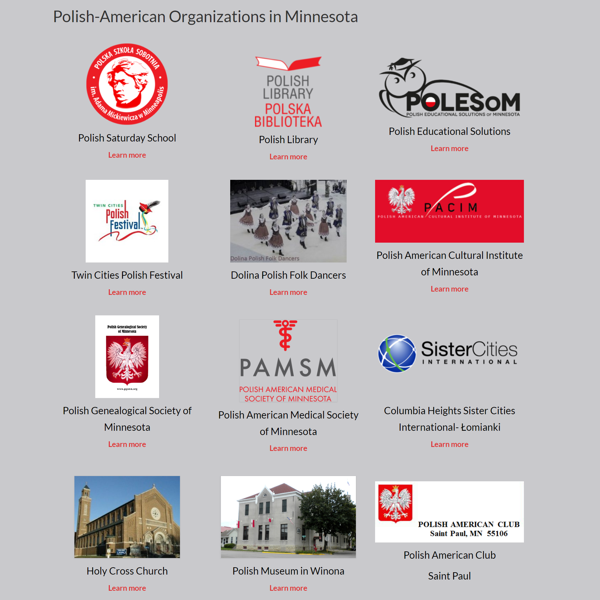

PORTFOLIO

Winter Olimpics Gifs App
This program uses GIPHY API to make a dynamic web page that populates with gifs chosen by the user. The GIPHY API is called and JavaScript and jQuery are used to change the HTML of the site.

Sortir App
An app that allows users to enter a city, date and interest category then searches nearby events based on the information entered. The following APIs were used; Google Map, Eventful and Lyft.

Global Prescription App
This app gives the user access to Federal Drug Administration database that houses a list of drugs. Then the app finds the drug international equivalencies based on a active ingredient. This database could also serve as a patient database for hospitals in the third world countries who still keep track of patient information using pen and paper.

Chicago Transit Authority (CTA) App
This app displays the schedule of 4 different lines and allows the user to find the next train at the Chicago Randolph/Wabash station.

People Magazine App
PeopleMagazine App allows the user to scrape recent articles with pictures. The user is able to save their preferred articles and add notes. The folowing dependencies were used: express, request, cheerio, mongoose, morgan and express-handlebars

Hikers Express App
This App allows the user to find a companion for the hiking adventure. This full-stack site takes in results from users' surveys, then compares their answers with those from other users. The app then finds the name of the user with the best overall match.
Connect with Me



Website for Polish-American Organizations in Minnesota
This website lists all Polish-American Organizations in Minnesota with the links to individual websites. It also publishes major events. The history page is being updated.